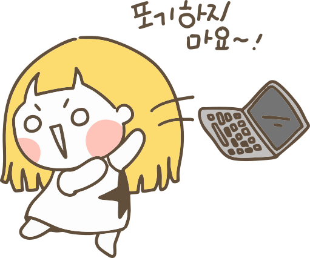

UI/UX 디자이너,
무슨 일을 할까?
화면 너머에서 사람의 마음을 설계하는 일
한봄고등학교 시각디자인과 학생들을 위한 UI/UX 직업 이야기
디자인 스튜디오
블랙크라운 스튜디오 대표
아이스브레이킹 하나
시작하기 전에, 가볍게 생각해보는 시간입니다. 평소 여러분의 행동은 어땠나요?
아이스브레이킹 둘
조금 더 깊이 들여다볼까요? 클릭하여 디자이너가 고민하는 포인트를 발견해보세요.
최고의 경험
앱을 사용하면서 "와, 이거 진짜 편리하다"라고 감탄했던 순간이 있으신가요?
로그인 없이 결제가 끝나거나, 다음 볼 영상이 추천되어 바로 재생되는 순간. 물 흐르듯 자연스럽게 사용자의 목표가 달성되었을 때 우리는 무의식적으로 편리함을 느낍니다.
답답한 경험
반대로 "이건 왜 이렇게 만들어놨지?" 하며 답답해했던 순간이 있었나요?
다음 화면으로 넘어가는 버튼이 너무 작아서 터치가 안 되거나, 결제 창을 찾기 위해 다섯 번 넘게 클릭해야 하는 복잡한 구조. 사소한 디자인 오차가 커다란 피로도를 낳습니다.
스마트폰을 넘어, 다양한 디바이스로
오늘날 UI/UX 디자인은 모바일 앱을 넘어 우리 일상 속 모든 화면을 설계하는 영역으로 확장되었습니다. 각 기기를 마우스로 가리켜보세요.
스마트워치 (Smart Watch)
1~2인치 내외의 매우 협소한 원형/사각형 화면 기기입니다.
- 극도의 정보 압축: 꼭 필요한 필수 데이터만 즉시 전달
- 터치 정확도: 손가락 끝 굵기를 고려한 넉넉한 터치 영역
- 피드백 다각화: 화면 외에 진동, 알림음 등 햅틱 경험 활용
모바일 (Mobile Phone)
우리가 일상에서 가장 흔하게 접하는 스마트폰 기기입니다.
- 한 손 조작성 (Thumb Zone): 엄지손가락이 닿기 쉬운 영역에 주요 버튼 배치
- 다양한 해상도: 기기마다 제각각인 비율과 디스플레이 크기 대응
- 제스처 활용: 스와이프, 줌인, 롱프레스 등 직관적 행동 규칙 설계
키오스크 (Kiosk)
공공장소나 음식점에서 혼자 주문/결제하는 대형 화면 장치입니다.
- 빠른 결제 동선: 고민할 시간을 줄여주는 흐름 및 큰 메뉴판 구성
- 배리어 프리 (Barrier-Free): 고령자나 휠체어 탑승자를 배려한 터치 위치 분기
- 물리 피드백 연동: 영수증 인쇄, 카드 삽입 상태 등 오프라인 기기 연동
UI vs UX 차이점 알아보기
카페에 비유해서 이해하면 훨씬 쉽게 다가옵니다. 탭을 선택해 비교해보세요.
사용자가 제품과 상호작용할 수 있도록 돕는 시각적 요소를 의미합니다.
사용자가 제품과 상호작용할 때 느끼는 감정과 정서에 관한 것입니다.
제품의 룩앤필(Look & Feel)에 초점을 맞춥니다. (타이포그래피, 컬러, 이미지 등)
사용자 여정(User Journey)의 전반적인 사용자 친화성에 초점을 맞춥니다.
제품을 더욱 유용하고 심미적으로 매력적으로 만들며, 다양한 화면 크기에 최적화하는 것이 목표입니다.
효율적이고 사용하기 쉬운 제품을 통해 사용자에게 즐거움을 선사하는 것이 목표입니다.
UI 디자인의 4가지 핵심 고려사항
단순히 아름다운 화면을 넘어, 사용자가 직관적으로 이해할 수 있는 시각 규칙을 설계해야 합니다. 각 카드를 클릭해보세요.
01. 일관성 (Consistency)
동일한 규격의 디자인 가이드를 기반으로 버튼 모양, 색상, 정렬 등 시각적 통일성을 유지해 유저의 인지 혼란을 막습니다.
02. 시각적 위계 (Visual Hierarchy)
크기, 두께, 여백의 과감한 조절을 통해 핵심 요소(예: 타이틀)와 보조 요소(예: 설명) 간의 우선순위를 직관적으로 구분합니다.
결제가 완료되었습니다 주문 번호 20260714-001 영수증 확인
결제가 완료되었습니다
주문 번호: 20260714-001* 영수증은 마이페이지에서 확인 가능
03. 가독성 & 대비 (Readability)
텍스트와 배경의 명도 차이를 높이고 16px 이상의 본문 규격을 사용하여 어두운 환경에서도 눈이 피로하지 않도록 돕습니다.
배경과 글자 색 대비가 낮아 가독성이 불량한 텍스트
충분한 대비와 줄간격을 확보하여 눈이 편안한 텍스트
04. 피드백 & 상태 (Feedback)
버튼 작동 시 로딩 서클이나 확인 체크 등 반응형 모션을 즉각 제공하여 시스템이 올바르게 실행 중임을 신뢰성 있게 전달합니다.
사용자 경험의 5단계, UX 5 Elements
추상적인 사용자의 생각(Strategy)이 눈에 보이는 비주얼(Surface)로 구체화되는 5가지 레이어 스택입니다. 각 단계를 클릭해보세요.
사용자 요구와 비즈니스 목표 정의
제품을 "왜(Why)" 만드는가에 답하는 뿌리 단계입니다. 사용자가 이 제품을 통해 얻고 싶어 하는 가치와 기업이 달성하려는 명확한 비즈니스 성과를 일치시킵니다.
구현 기능 및 콘텐츠 요구사항 규정
전략 단계에서 규명된 사용자의 목표를 해결하기 위해 구체적으로 제품이 "무엇(What)"을 담고 제공해야 하는지 기능 명세와 콘텐츠 범위를 정의합니다.
정보 설계(IA) 및 인터랙션 흐름 설계
유저가 원하는 정보를 빠르고 정확하게 찾을 수 있도록 메뉴의 계층을 조직화(Information Architecture)하고, 유저가 기능 간에 어떻게 "이동(How)"하는지 경로를 매핑합니다.
와이어프레임 기획 및 정보 정렬 배치
추상적인 흐름이었던 구조 단계를 화면이라는 2차원 공간으로 옮겨오는 첫 설계입니다. 글자, 이미지, 버튼의 상대적인 "위치(Where)"와 중요도 비중을 와이어프레임으로 도식화합니다.
비주얼 그래픽 디자인 완성
제품의 가장 바깥층이며 사용자의 감각이 직접 닿는 실체적 "시각(Visual)" 영역입니다. 정의된 뼈대 위에 아름다운 폰트, 정제된 브랜드 컬러, 일관된 스타일 킷을 얹어 최종 디자인을 완성합니다.
좋은 UX vs 나쁜 UX
디자이너는 사용자가 "헤매는 순간"을 미리 발견해서 부드럽게 설계해주는 사람입니다.
나쁜 UX 사례
중요한 버튼을 구석에 작게 배치하거나 찾기 힘들게 만들었을 때
좋은 UX 사례
다음에 무얼 눌러야 할지 한눈에 보이고 즉각적으로 행동을 유도할 때
디자이너의 생각법, 더블 다이아몬드
문제를 올바르게 정의하고 창의적으로 해결하기 위한 디자인씽킹의 핵심 방법론입니다. 각 단계를 클릭해보세요.
(문제 공간)
(해결 공간)
사용자 관찰과 리서치 (발산)
기존의 편견을 버리고 사용자가 겪는 진짜 불편함이 무엇인지 깊이 관찰하고 다양한 목소리를 넓게 수집하는 리서치 단계입니다.
핵심 문제의 규명 (수렴)
조사된 다양한 문제점들을 분류하고 좁혀나가, 우리가 해결해야 할 단 하나의 가장 가치 있는 핵심 문제를 명확하게 정의합니다.
아이디어 전개와 테스트 (발산)
정의된 핵심 문제를 해결하기 위해 다양한 아이디어를 브레인스토밍하고, 스케치나 프로토타입을 만들어 유효성을 빠르게 테스트합니다.
제품 구체화 및 출시 (수렴)
최종 선정된 솔루션의 세부 인터페이스와 사용성을 다듬어 실제 구현을 완료하고, 사용자가 사용할 수 있도록 최종 출시합니다.
서비스 하나가 탄생하기까지
기획부터 배포까지 제품이 탄생하는 순서입니다. 각 단계를 클릭하여 무엇을 하는지 알아보세요.
UXUI 디자이너 vs 프로덕트 디자이너
현업에서 자주 혼용되지만, 핵심 목표와 초점이 서로 다른 두 디자이너 직무를 한눈에 비교해보세요.
UXUI 디자이너
"화면의 사용성과 사용자의 디지털 경험에 집중"
- 최적의 화면 설계: 앱/웹의 UI 레이아웃, 컬러, 컴포넌트 일관성 제어
- 사용성 검증 및 리서치: UT, 행동 로그 기반의 사용성 결함 발견 및 수정
- 화면 중심의 여정 설계: 첫 진입부터 이탈까지 물 흐르듯 유연한 흐름 설계
프로덕트 디자이너
"사용성 해결을 넘어 비즈니스 전략과 제품 가치 설계"
- 비즈니스 임팩트 고려: 디자인이 매출, 리텐션 등의 지표에 어떤 기여를 하는가 고민
- 더 넓은 제품 오너십: 단순 화면 설계에서 나아가 비즈니스 기획 및 설계에 주도적 참여
- 개발/기획과의 조화: 프로덕트 매니저(PM)에 필적하는 거시적 안목으로 협업
어떤 명칭이든 결국 "사용자의 문제점을 정확하게 찾아내고(Problem Solving), 화면을 통해 우아하게 해결하는 직업"이라는 본질은 완전히 동일합니다.
그럼 어떤 능력이 필요할까?
디자이너가 다루는 하드 스킬(도구)과 오랫동안 살아남기 위해 필수적인 소프트 스킬입니다.
TOOLS (디자인 도구)
Figma
화면 실무 설계 및 팀 협업을 위한 글로벌 메인 표준 프로그램
Photoshop & Illustrator
고품질의 소스 가공 및 벡터 그래픽 드로잉을 위한 도구
Notion & FigJam
아이디어 구조 정의, 기획안 작성 및 일정 관리를 위한 협업 문서
SOFT SKILLS (커뮤니케이션 & 관점)
공감 능력
화면 뒤에서 조용히 내 앱을 사용하는 '진짜 타인'의 불편한 마음 읽기
사용자 중심 사고의 시작
우리는 흔히 내가 편하다고 해서 다른 사람도 똑같이 편할 것으로 오해합니다. 진정한 공감은 나의 편견을 내려놓고 사용자가 막히는 구간을 제3자의 시선에서 가만히 들여다보는 것입니다.
논리적 설득력
"그냥 예뻐서요"가 아닌 데이터와 디자인 규칙에 기반한 커뮤니케이션
협업을 이끄는 커뮤니케이션
디자이너는 기획자나 개발자에게 자신의 디자인을 왜 이렇게 했는지 설명할 수 있어야 합니다. 명확한 시각 근거와 타당한 논리가 뒷받침될 때 비로소 원하는 디자인이 제품에 그대로 출시될 수 있습니다.
피드백 수용력
나의 창작물에 대한 비판과 분석에 대해 상처받지 않고 수용하는 단단함
단단한 성장을 돕는 마인드
디자인은 나만의 예술 작품이 아닙니다. 비즈니스 성과와 사용성을 위한 결과물이기 때문에 다양한 직군으로부터 검토와 지적을 받을 수 있습니다. 비판을 피드백으로 받아들여 보완해 나가는 수용력이 중요합니다.
전공과 진로 준비하기
시각디자인과 1학년 학생으로서 지금부터 어떤 방향으로 마인드셋을 가질 수 있을까요?
전공의 문턱은 넓습니다
시각디자인이나 산업디자인 전공이 많지만, 컴퓨터공학이나 인지심리학, 혹은 문과 등 다양한 분야에서 전직해온 훌륭한 디자이너가 무척 많습니다. 백그라운드보다 문제 해결 능력이 핵심입니다.
포트폴리오가 곧 학위
실무 채용을 진행할 때 가장 엄격하게 들여다보는 것은 점수나 학벌이 아닌 포트폴리오입니다. 어떤 과정을 거쳐 아이디어를 냈고, 어떤 논리로 문제를 발견하고 풀었는지가 상세히 드러나야 합니다.
지금 바로 시작할 수 있는 것
평소에 내 폰에 깔린 앱들을 조심히 관찰하는 습관을 가져보세요. 가볍게 불편한 앱의 화면을 스크린샷 찍어 다시 배치해보거나, 공모전에 참가하여 아이디어를 발산해보는 것도 큰 학습이 됩니다.
현실적인 이야기, 연봉과 진로
대학 입학 후 가장 관심을 두는 직군별 채용 흐름과 기본적인 현업 형태를 소개합니다.

어디서 활약하게 되나요?
IT 서비스를 자체 개발하는 대기업 인하우스, 기민하게 기획부터 로켓 성장하는 스타트업, 다양한 기업의 프로젝트를 수주하여 제작하는 에이전시, 자유로운 프리랜서 등 여러 길이 존재합니다.
신입 연봉은 어느 정도인가요?
초기 연봉은 비즈니스 형태와 시장의 상황, 회사의 볼륨에 따라 격차가 크게 납니다. 숫자 자체보다 기업의 성장성이나 프로젝트의 범위, 나 자신이 주도할 수 있는 영역이 있는지가 중요합니다.
가장 단단하고 강한 무기
흔한 스펙 점수나 이론성 자격증보다, 실제로 작은 앱이나 화면 단 하나라도 처음부터 끝까지 고민해서 마침표를 찍어본 경험이 입사 전형에서 가장 뛰어난 점수로 부각됩니다.
자유로운 질의응답
평소 UI/UX에 대해 궁금했던 대표적인 세 가지 물음에 미리 답변해 드립니다.
여러분의 낙서가 언젠가 누군가의 삶을 더 윤택하게 만드는 멋진 화면이 되기를 진심으로 바랍니다.